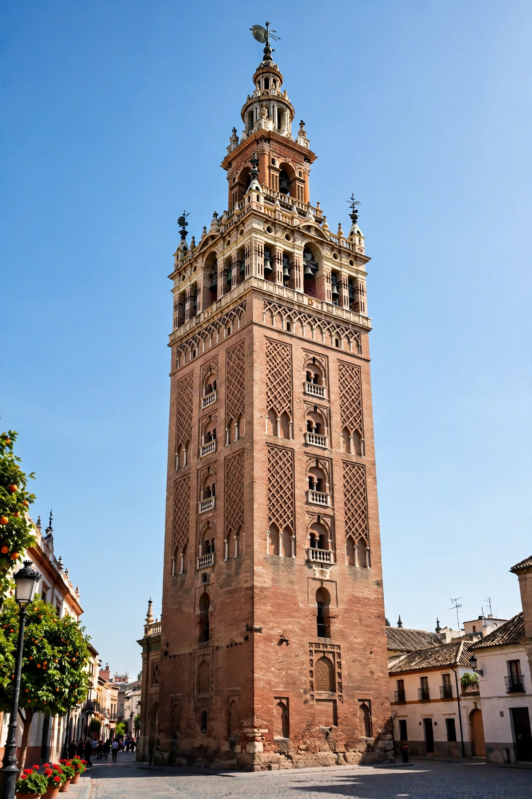

From Wikipedia, the free encyclopedia

| La Giralda | |
|---|---|
| Location | Seville, Andalusia, Spain |
| Built | 1184–1198 (minaret); belfry added 1558–1568 |
| Height | 104.1 m (341 ft) |
| Architectural style | Almohad / Moorish, with Renaissance belfry |
| Architects | Ahmad Ben Basso; Ali de Gómara; Hernán Ruiz II (belfry) |
| Part of | Seville Cathedral; UNESCO World Heritage Site (1987) |
The Giralda (Spanish: La Giralda) is the bell tower of Seville Cathedral in Andalusia, Spain. It was built as the minaret of the Great Mosque of Seville under the Almohad dynasty at the end of the 12th century and, after the Christian reconquest of the city in 1248, was converted into a bell tower for the cathedral. Topped by a Renaissance belfry added in the 16th century and crowned by the weather-vane statue known as the Giraldillo, the tower stands 104.1 metres tall and remains one of the most important symbols of Seville — a monument in which Islamic and Christian architecture are layered in a single structure.
Construction of the Great Mosque began in 1172 under the caliph Abu Yaqub Yusuf. Work on the minaret started in 1184 to designs by the architect Ahmad Ben Basso; after his death, Ali de Gómara continued the project, and the tower was completed in 1198 with the installation of four gilded bronze spheres at its summit. The minaret was modelled on that of the Koutoubia Mosque in Marrakech — its sister tower — and resembles also the Hassan Tower in Rabat. Instead of stairs, the interior contains a series of 35 ramps wide enough, tradition says, for the muezzin to ride a horse to the top to deliver the adhan.
When Ferdinand III of Castile took Seville in 1248, the mosque became the cathedral and the minaret its bell tower; the bronze spheres were destroyed by an earthquake in 1356. In 1558–1568 the architect Hernán Ruiz II added the present Renaissance belfry (el campanario), with its tiers of arches, inscriptions in Latin, and the crowning bronze statue of Faith — the Giraldillo — cast by Bartolomé Morel in 1568. The statue, over four metres tall, functions as a weather vane (giraldillo, from girar, "to turn"), which gave the whole tower its name.
The Almohad shaft is a square tower of stone and brick, roughly 13.6 metres per side, decorated with sebka (interlaced lozenge) brickwork panels, paired windows with horseshoe arches that widen as the tower rises, and blind arcading. Inside, the ramps wind around a series of superimposed vaulted chambers. The Renaissance belfry rises in receding tiers with balustrades, lilies in bronze urns at the corners, and an inscription from the Book of Proverbs running around it: Turris fortissima nomen Domini ("The name of the Lord is a most strong tower"). Together with the cathedral and the Alcázar, the Giralda was inscribed as a UNESCO World Heritage Site in 1987.
The Giralda has inspired numerous imitations, particularly in the United States during the Spanish Revival era: copies and adaptations include the tower of the Country Club Plaza in Kansas City, Missouri (1923); the Wrigley Building's clock tower in Chicago draws partly on it; and a half-scale replica stood for decades at the former Spanish Village in San Diego. A long-running urban legend holds that the tower in Kansas City became Seville's official sister-city emblem.